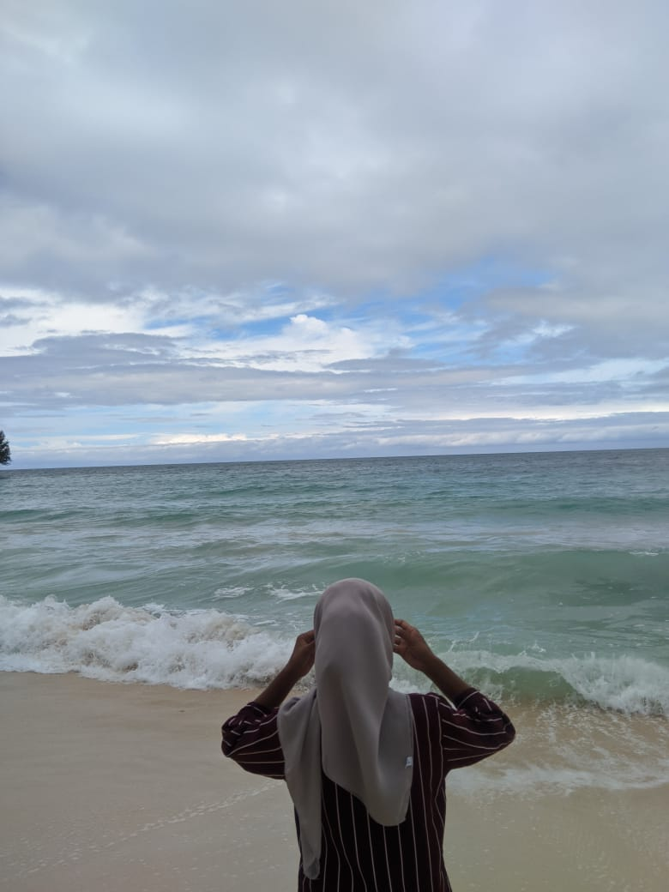

Design Your website
Don't forget to like,comment,share and subscribe
About Myself
| FOTO | DATA DIRI | KETERANGAN |
|  | Nama | Rosita |
| Nim | 16323041 | |
| Ttl | Yainuelo,06 Februari 2004 | |
| Status | Mahasiswa | |
| Alamat | Kayu merah | |
| Agama | Islam | |
| Jenis Kelamin | Perempuan | |
| Jurusan/Semester | Manajemen Informatika/2(dua) | |
| Nama Fakultas | Politeknik Negeri Fak-fak | |
| Asal Sekolah | Sma Negeri 44 Maluku tengah | |
| Asal Daerah | Kec.Amahai,Desa Yainuelo |
Audio dan Video
Ini merupkan Audio dan Video yang saya suka,pertama kenapa saya menyukai lagu
"Perfect" itu karna alunan instrument musicnya yang menurut saya sangat tenang
dan arti dari lagunya yang bagus,sehingga membuat saya suka dengan music ini.
Sedangkan untuk video,kenapa saya memasukkan video senja karena saya salah satu orang
yang suka akan keindahan mata hari terbenam.
"Lagu Ed Sheeran-Perfect"
"Video senja"
About MyWebsite
Website ini dibuat untuk memenuhi tugas pada mata kuliah desain web,yang
di dalamnya berisi tentang profil/data diri saya, dan musik serta video yang saya sukai
Berita Terbaru
Tekan untuk melihat berita lebih lanjutPerjalanan delapan tahun kasus kematian Vina Dewi (16), perempuan asal kampung Samadikun,
Kecamatan Kejaksan, Kota Cirebon, Jawa Barat, diwarnai teka-teki sejak peristiwa terjadi
pada 27 Agustus 2016. Kabar terbaru, berita acara pemeriksaan (BAP) terhadap delapan dari
11 pelaku yang ditangkap yakni ER, HS, JY, ES, SP, SK, SD, dan RW dianggap penuh kejanggalan.
Pernyataan itu disampaikan Pengacara Hotman Paris ketika bertemu dengan keluarga Vina di salah
satu mal kawasan Grogol, Jakarta Barat pada Kamis (16/5/2024) kemarin. "BAP itu ada ya dan yang
jadi imbauan kami kepada Bapak Kapolri ini ada sesuatu yang tidak beres di penyidikan awal," kata Hotman.